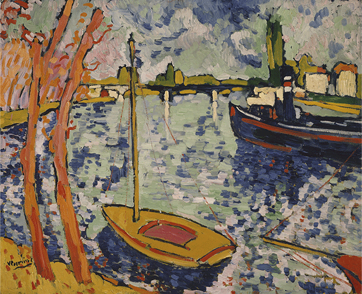
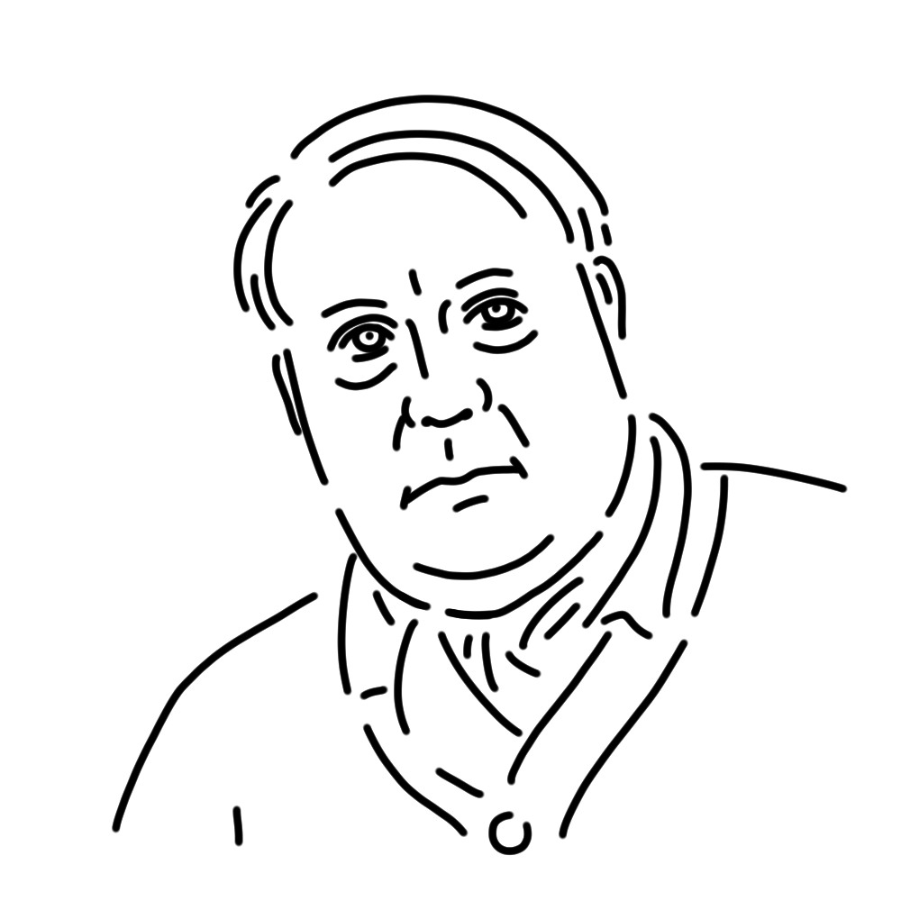

She hated academicism and studied painting on her own, making her a representative muse of the Fauve School. Her instinctive, raging colors are like claws and fangs that destroy tradition. Her enormous size and short temper are the very definition of a wild beast.
France
"The River Seine at Chatou"
"The Bar Counter"
"Restaurant De La Machine a Bougival" etc.

This is one of the works by Vlaminck, a pioneer of Fauvism. It depicts a view of Chateau, a town on the Seine River in France, and shows the influence of Van Gogh, a favorite of Vlaminck, who was a self-taught painter. The brushstrokes and colors, which are said to have been applied directly from the tube, are truly worthy of the name "Beast."
Year
1906
Medium
Oil on canvas
Dimension
81.6 cm x 101 cm
Collection
Metropolitan Museum of Art (USA)

A leading painter of the Fauvist movement. A man of great talent who once earned a living as a bicycle racer and music teacher, he began painting as a self-taught artist after being strongly influenced by Van Gogh’s intense colors and brushwork. He specialized particularly in landscape painting, capturing the natural scenery and cityscapes of France with rich emotion through vivid colors and bold brushstrokes. He detested tradition and academic art, and is famously known for an incident in which he shouted at the Japanese painter Yuzo Saeki, calling his work “academic.”
Maurice de Vlaminck
April 4, 1876
October 11, 1958(aged 82)